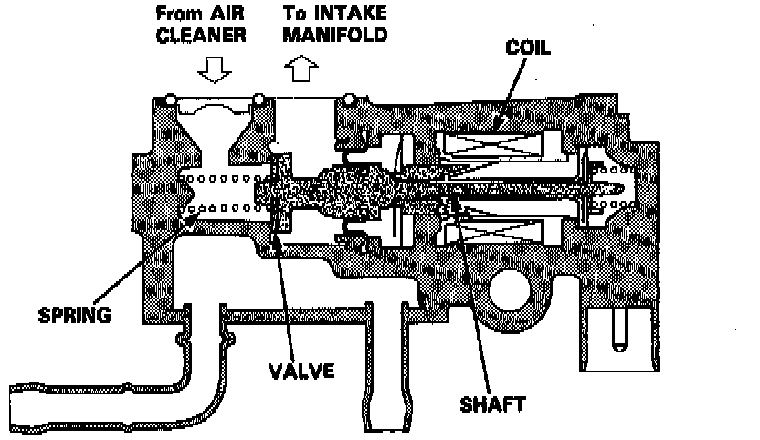

Idle Speed/Throttle Actuator - Electronic: Description and Operation
Idle Air Control (IAC) Valve Sectional View:

PURPOSE
When the Idle Air Control (IAC) Valve is activated, the valve opens to maintain the proper idle speed.
OPERATION
The amount of bypassed air is thus controlled in relation to the engine coolant temperature. When the coolant temperature is low, the IAC valve is opened to obtain the proper fast idle speed. The valve changes the amount of air bypassing into the intake manifold in response to electric current controlled by the Engine Control Module.